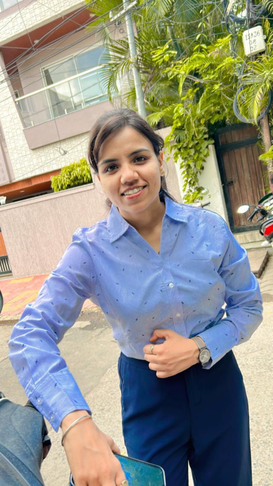

Executive Assistant | Leadership Professional | Digital Marketing Learner
Hello! I am Roshni Basantani from Indore. I work as an Executive Assistant and I am passionate about leadership, management, automation and digital marketing. I believe in continuous learning, discipline and building systems that improve productivity and growth. My goal is to become financially independent, build strong leadership skills and contribute meaningfully to the organizations I work with.
My journey started in Indore where I learned the importance of discipline, responsibility and hard work from my family. Over the years I developed strong organizational and management skills which led me to work as an Executive Assistant supporting leadership and business operations. Working closely with senior management helped me understand strategy, decision making and organizational growth. Today I continue to expand my skills in leadership, automation and digital marketing so that I can contribute more effectively to business growth and innovation.
My vision is to grow into a strategic management professional who can combine leadership, operations and digital marketing to create high impact results. I aim to continuously upgrade my skills and build systems that increase efficiency and innovation.